Elias Zobrist
IO sono
The project aims to collect some Whatsapp messages containing the words “io sono”. The aim is to show the state of being of the people, at a given moment, who through a message have decided to share with me. The viewer will always be estranged from the context of the messages, but through an exercise of imagination will be able to guess the nature of these messages.
Object
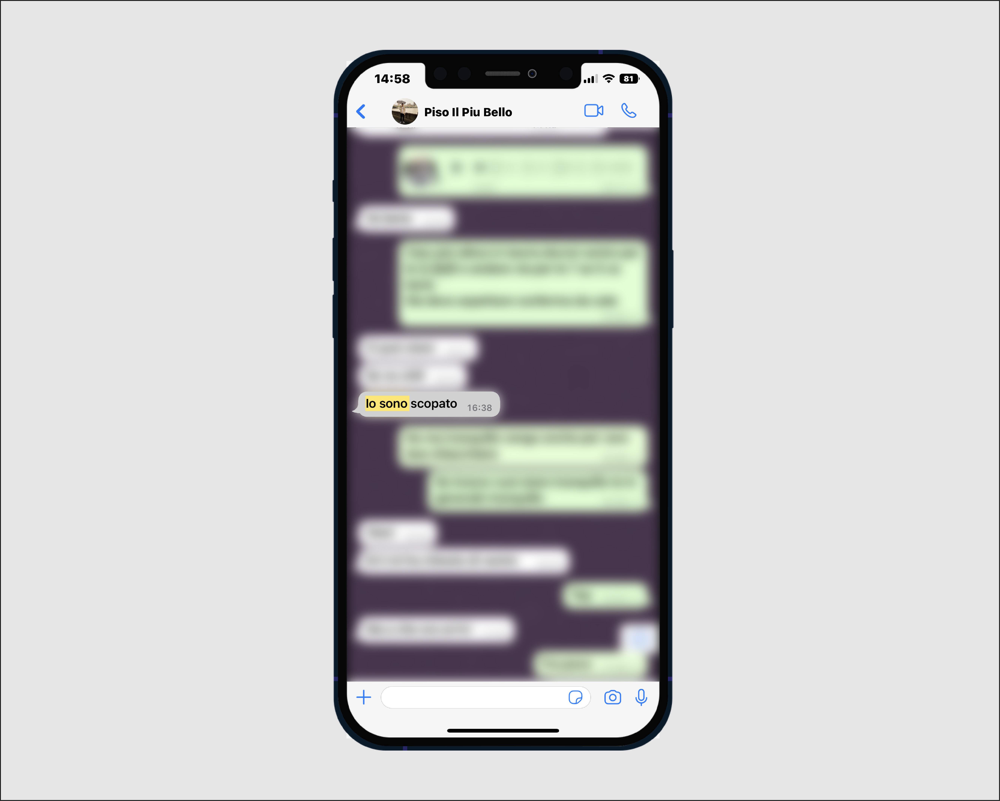Disassembled object
 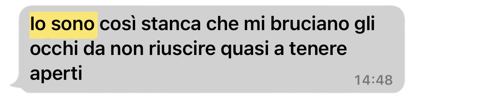
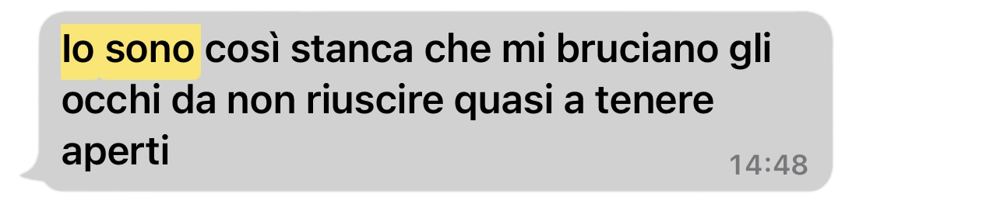
 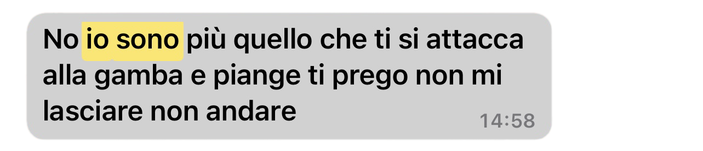
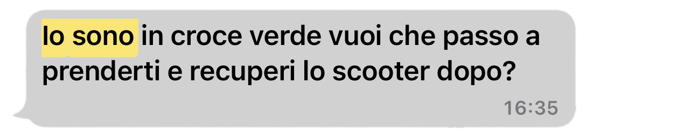
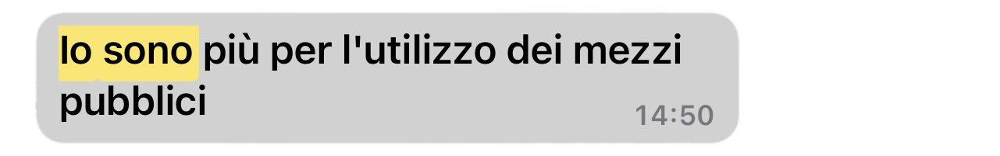
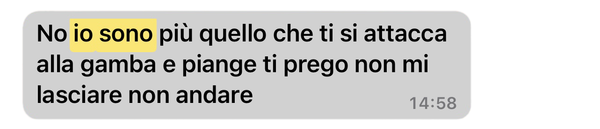
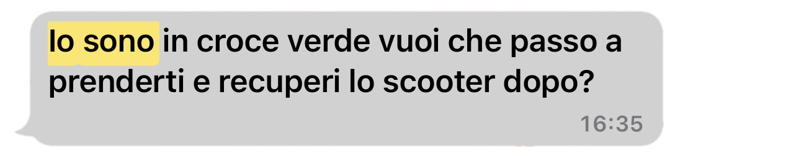
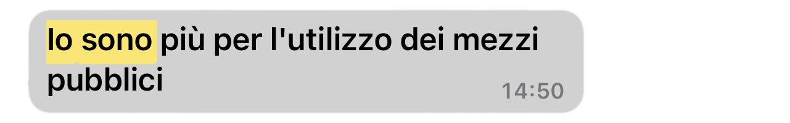
 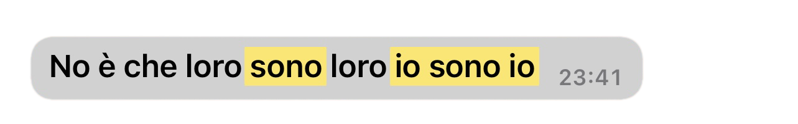
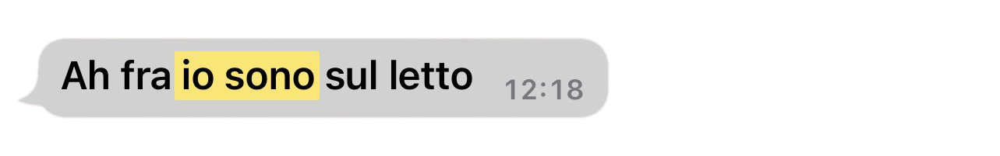
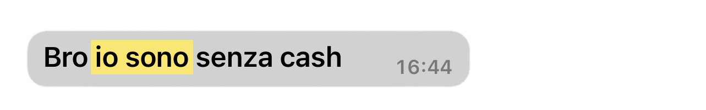
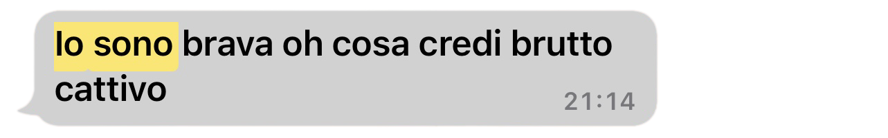
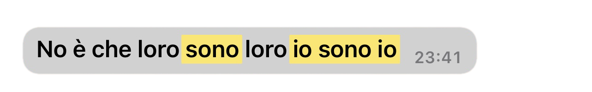
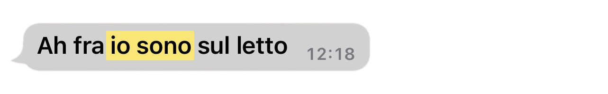
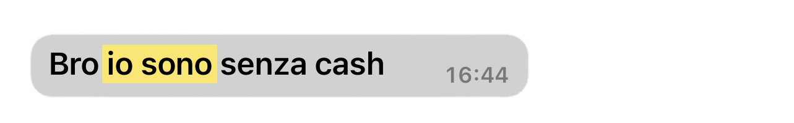
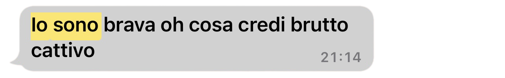
WEB PLATFORM
Through this site you have the possibility to interact, through text and machine learning, with all the people who have shared with me by writing their state of being. The interactions I have introduced recall the actions we take during a chat conversation.
PLAY
The display of individual messages only happens when the user writes "cos'hai da dirmi?" (what do you have to tell me?) in the text field. I decided to create a kind of interaction between the user and the people who decided to chat with me.
According to the same reasoning, to exit the display of individual messages, one must write "grazie!" (thank you!) to end the chat and thank you for participating in the conversation.
SHUFFLE
The shuffle button that randomly sorts the messages displayed on the main screen has been inserted like the button for audios that we find in every messaging application. This choice was made to remain consistent with the design theme.
NEXT

To switch from one message to another, the phone must be shown to the camera. To achieve this function, I trained the Google Teachable Machine so that it would recognise the presence or absence of the phone from the webcam. To do this, I recorded thousands of images of myself without the phone and later with the phone. This function recalls the gesture of picking up the phone when you have received a notification.
AUDIO
To make the experience more immersive, I decided to include the audio that characterises the arrival of a message on Whatsapp, every time you view the individual message or move on to the next one.